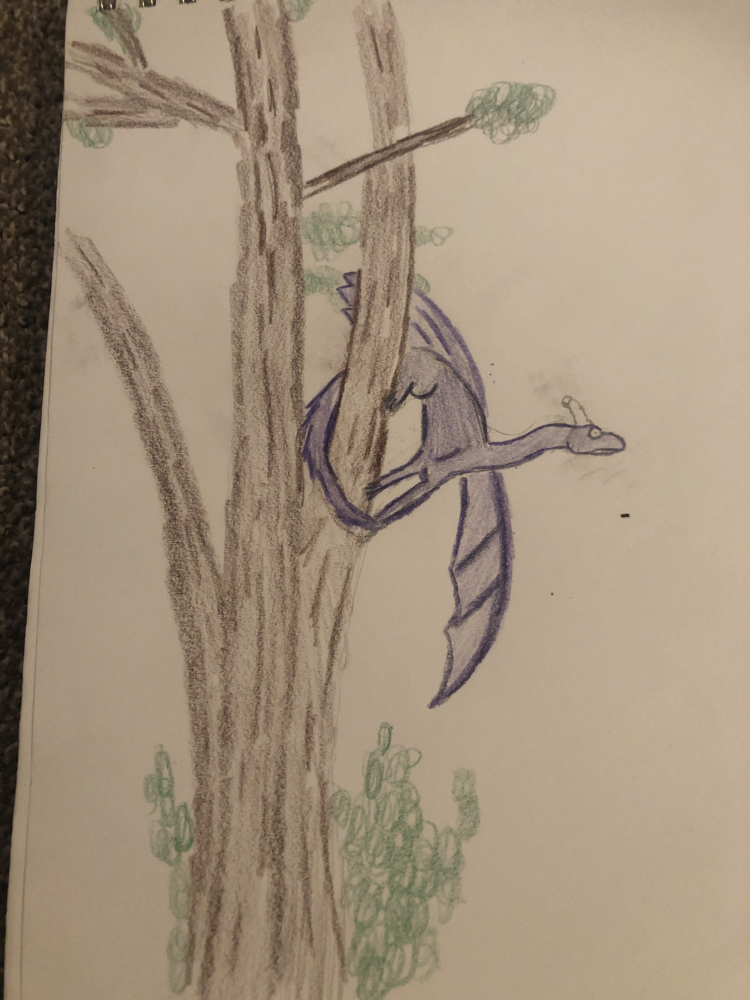
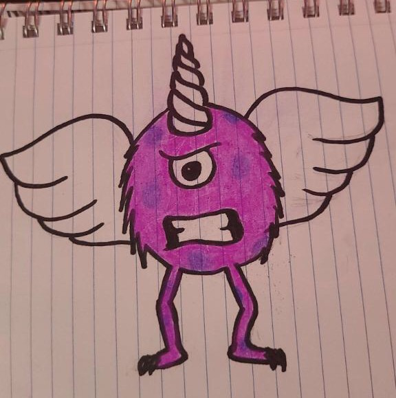
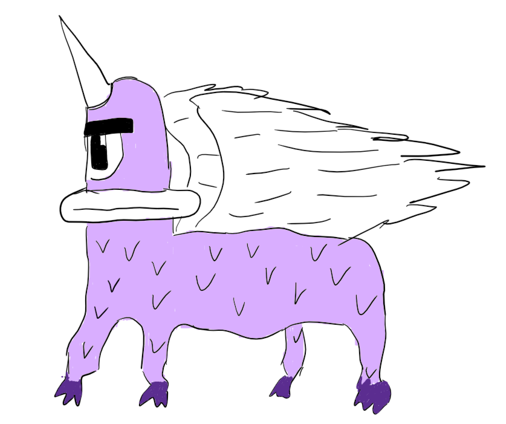

Sighting 1: The Innocent PPE Location: Whispering Pines National Forest Date: ??/??/2018 Time: 7:30PM - 11:20PM Observer: Skittles
Skittles was hiking through the Whispering Pines National Forest when they stumbld upon this mysterious creature. "As the sun began to set, casting a purple hue over the landscape, I noticed a strange silhouette fluttering through the trees. It was unlike anything I had ever seen before" said Skittles.
They described the creature as one with a large, spherical body covered in spiky, purple fur. Its most striking feature was its massive, singular eye. Extending from the top of its head was a sharp, spiraled horn. The creature also had two large bat-like wings.
"I watched in awe as the creature circled above me. Its wings flapped rhythmically, keeping it aloft," Skittles recalls. "It seemed to have been using its tiny arms to swing on the branches before it found me. Its innocent look was almost, alluring."
Skittles mentioned how they suddenly felt a craving for sweets, thinking it was due to the Purple People Eater resembling a large piece of Nerd candy. "That's when it slowly approached me, finally landing on a tree trunk where I left my cranberry juice," they explained. "As the red juice started spreading on its fur, it suddenly fell down flat on its back and I felt like I woke up from a trance!"
Thankfully, our unaware observer returned unscathed and with no signs of the Purple People Eater keeping track of them as a potential victim. The behavior of the creature was however, strange. The leading theory is that despite their unique looks, they bleed red just as we do. Hence, they thought the blood to be theirs and may as well have fainted. This precaution method is to be studied further.

Sighting 2: The Stealthy PPE Location: Blue Ridge Mountains Date: ??/??/2022 Time: 9:00PM - 10:30PM Observer: Al
Al is a wildlife photographer who was camping near a secluded part of the forest on their trip to Blue Ridge Mountains. "I was adjusting my camera when I heard a rustling sound nearby. I turned to see a flash of purple moving swiftly through the trees" Al says.
This time, the creature is described to to be more dragon-like, especially its wings. A long and serpentine body covered in deep purple scales, with a now smaller singular eye and a smaller backwards-curved horn were also noted.
What is unusual about this encounter, was the Purple People Eater's target. "It moved with a predatory grace, its wings folded tightly against its body as it began slithering down the tree trunk with incredible speed and precision" recalls Al. "I realized with a chill that the creature was headed towards a nearby clearing where I had seen a group of campers earlier this evening."
Al mentioned that the creature seemed to survey their victims this time instead of luring them as it does with singular targets. They were feeling a strange tingle in their toes as they approached the creature, resembling that of a TV's static noise. Whether that was Al's fear response, or an action from the creature, is still unknown.
But Al's quick thinking may have disrupted whatever the Purple People Eater was hoping to achieve. "All I had was spare candy from my snack bag, so I threw a bunch deep into the forest hoping it would distract the creature. That's when it turned around very excitedly and vanished into the darkness."
Al's courageous actions were a key in discovering more about how to deal with Purple People Eaters, where we learned about their connection to sweets and candy. An eye-opening revelation that the innocent candy loving purple shell houses a creature that is hoping to take over the food chain, as well as a revelation to a method to throw them off.

Sighting 3: The Aggressive PPE Location: Redwood National Park Date: ??/??/2023 Time: 6:30AM - 7:00AM Observer: Ed
Ed was a truck driver who decided to spend the night in his truck that's parked near campsites in the Redwood National Park. Once morning arrived, he decided to boil some water for his coffee using a portable kettle out on a bench. "Then a strange noise caught my attention. A rustling and low growling coming from a nearby underbrush," Said Ed.
The Purple People Eater took on a more direct approach, with the appropraite form for the occasion. A spherical, fuzzy purple body with a single, large eye that stared menacingly, with two small white wings on its back. Coupled with the sharp, spiraled horn protruding from its head and long, spindly legs that ended in clawed feet, it was clear that this creature did not intend to play the long game.
"It began to advance, growling while baring its fangs in a vicious snarl. That's when I began running towards the campsite, hoping to find some assistance" Ed recalled. Running seemed to be futile, as the creature's size did not hinder its agility. Ed did manage to arrive at a campsite with a pond nearby, that was unfortunately recently deserted.
Then, an unexpected turn of events. "A gentle breeze suddenly blew by, carring with it a stream of bubbles from the nearby pond. I looked over to find a kiddy pool that seemed to have been filled with bubble soap" explained Ed. "When I quickly looked back over to the creature, I noticed I was not the only one that shifted their focus."
Despite its more monstrous look, the creature was at its core similar to the ones mentioned in the previous sightings. A core, that of a curious child. As the creature took its time examining where the bubbles came from, then moved over to the source to play around with the rest of the bubbles, Ed seized the opportunity and lived to tell the tale.
With each sighting we learn more about the true nature of these, or this, Purple People Eater. Yet, the more answers we find, the more questions appear as well. Until the day comes where we are able to examine these creatures, Ed has provided us with a key tool of distraction. Perhaps enough even, to capture one.

Sighting 4: The Curious PPE Location: Appalachian Trail Date: ??/??/2024 Time: 3:00PM Observer: Yours Truly
Before I even thought about making people aware of the existence of these creatures, I had to confirm that for myself. The previous reports almost always mentioned a location where people would usually camp, and hence I decided to head onto the Appalachian Trails. Not too close to where I live, but not too far either, all as a precaution to what I may soon face.
One of the main takeaways from the previous reports is how child-like this creature seemed to be, even though its approach almost always seemed ominous. To test that theory, I brought with me a backpack full of toys. Action figures, stuffed animals and Barbie dolls.
After a few days of setting up camps along various parts of the trail, I finally noticed something emerging from the bushes as I opened a bag of M&Ms. Perhaps candy was the reason it showed up at all, but there it was. It stood about 5 feet tall, covered in purple scales, with the usual large singular eye and horn. Its scaled body took on a more horse-like shape, with four legs ending in dark purple claws. In contrast, it had two large white feathered wings. It almost seemed like I caught it off guard, the form was far too jumbled. That is, if it was a form at all.
But alas, the creature's eyes were not set on me at all, but the different type of toys that I had laid out a distance away from my tent. Curiously, it bypassed the action figures and stuffed animals and fixated itself on the Barbie dolls. It gently picked up one of the dolls with its clawed foot and started examining it.
Any movements I made did not trigger any reactions from the creature's side. With that in mind, I brought out a cage that seemed large enough to fit the creature, and laid out more Barbie dolls to create a path for the Purple thing to follow. Soon enough, it was inside.
But the enclosure did not bother it at all. The creature spent its time playing with the dolls instead. It was odd watching it attempt to arrange them with its claws. Unfortunately, the few days were as much time as I was able to allocate for this adventure, so I had to return home for the time being. What's the worse that could happen with leaving such a mythical creature unattended in a cage?
A week goes by, and I return to see that nothing has changed. I was unable to muster enough courage to get close to the cage or attempt to interact with it, after all it still seems to completely ignore my existence. One thing to note, it was able to go by for a week without food or water.
Another week goes by. This time, I returned to find an empty cage. No sign of how it had escaped, no sign of forced exit. It was almost like it had simply poofed out of the cage and went somewhere else. It did not take the toys with it either.
Was a fortnight as far as it could go without food and water? Is the creature able to poof in and out of existence? Are we dealing with one singular Purple People Eater, or a group of them? Once again, I was left with more to ponder on.